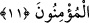

Sa’dî (k.s.) da şöyle demiştir:
Faydalı bildiğin sözü söyle
Hiç kimsenin hoşuna gitmese bile
Hulâsa adâlet, en güzel huylardandır. Şöyle bir hikaye nakledilir: Enûşirvan vefât
ettiğinde tabutuyla birlikte memleketinin her tarafında dolaştırılırken bir münâdî de;
“Kimin üzerimizde bir hakkı varsa gelip alsın.” diye bağırıyormuş. Onun vilâyetinde
üzerinde bir dirhem de olsa hakkı bulunan kimse bulunmamış. Bu yüzden Hâtem-i Tâî
cömertlikle meşhur olduğu gibi o da adâletle meşhur olmuş ve âdil lakabıyla anılmıştır.
Ona âdil denilmesinin sebebi, zulmü olmadığı ve adâleti şüyû bulduğu için sırf ona
medh ve senâ içindir. Ama zamânın sultanları ise zulümleri görülüp adâletle
davranmadıkları için onlara âdil lakabı verilmez. Çünkü onları medh ve sena için bu
lakabı vermek, yalan ve nankörlük olur. Âdil lakabının insaflı kâfire verilmesi câiz,
zâlim müslümanlara ise câiz değildir. Bu durum ise insaflı kâfirlerin adâleti tam sağlam
yaptıklarını göstermez. Bilakis bu, adâlet ve zulmün iki zıt olduğunu ve bir arada
bulunamayacaklarını ifâde etmekten başka bir şey değildir.
“Zehretü’r-riyâz” adlı eserde şöyle denilmektedir: Kıyâmet günü olduğunda Hz. Ebû
Bekir (r.a.)’ın sıdk sancağı dikilince bütün sıddîklar onun altında toplanırlar. Hz. Ömer
(r.a.)’ın adâlet sancağı dikilince, bütün âdiller onun altında toplanırlar. Hz. Osman
(r.a.)’ın cömertlik sancağı dikilince bütün cömertler onun altına toplanırlar. Hz. Ali
(r.a.)’ın şehitler sancağı dikildiğinde bütün şehitler onun altında toplanırlar. Bütün
fakihler Muaz b. Cebel (r.a.)’ın sancağı altında, bütün zâhidler Ebû Zer (r.a.)’ın sancağı
altında, bütün fakirler Ebü’d-Derdâ (r.a.)’ın sancağı altında, bütün Kur’ân okuyucular
Übey b. Ka’b (r.a.)’ın sancağı altında, bütün müezzinler Bilal (r.a.)’ın sancağı altında
ve haksız yere öldürülen bütün maktüller de Hüseyin b. Ali (r.a.)’ın sancağı altında
toplanırlar. “O gün biz bütün insanları önderleri ile birlikte çağırırız.” (İsrâ, 17/71)
âyeti ve devamı bunun delilidir.
Gerçekte adâlet her fiil, söz ve ahlâkta övgüye değer orta yoldur. “Emrolunduğun
üzere dosdoğru ol.” (Hûd, 11/112) âyetiyle emrolunan şey de budur. Bu mertebeye
ulaşan kırmızı altın ve çok güzel koku gibi nâdirdir. Hidayet ve muvaffakiyet
Allah’tandır.
11- Ey îman edenler! Allah’ın size olan nîmetini hatırlayın; hani bir topluluk size